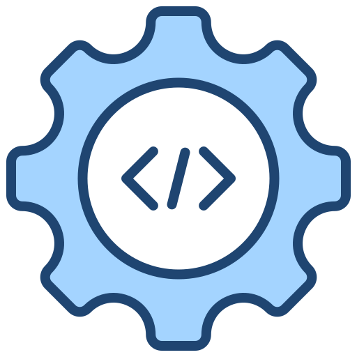

Vídeos sobre DS
Ensino Médio Com Técnico em Desenvolvimento de Sistemas
Técnico em Desenvolvimento de Sistemas: Como é o Curso? | Técnico em Programação
Informções sobre o Curso

Ensino Médio com Habilitação Técnica em Desenvolvimento de Sistemas
É o profissional que analisa e projeta sistemas. Constrói, documenta, realiza testes e mantém sistemas de informação. Utiliza ambientes de desenvolvimento e linguagens de programação específica. Modela, implementa e mantém bancos de dados.
Linguagens Utilizadas
• MySQL, SQL Server, PostgreSQL (Referente ao Banco de Dados)
• HTML (linguagem de marcação)
• CSS (linguagem de estilo)
• JavaScript (linguagem de script/programação)
Duração Do Curso
A duração do curso pode variar, sendo:
• 5 Anos - Ensino Médio Com Habilitação Técnica Em Desenvolvimento De Sistemas- FATEC
• 3 Anos - Ensino Médio Com Habilitação Técnica Em Desenvolvimento De Sistemas- ETEC